MedHeroes
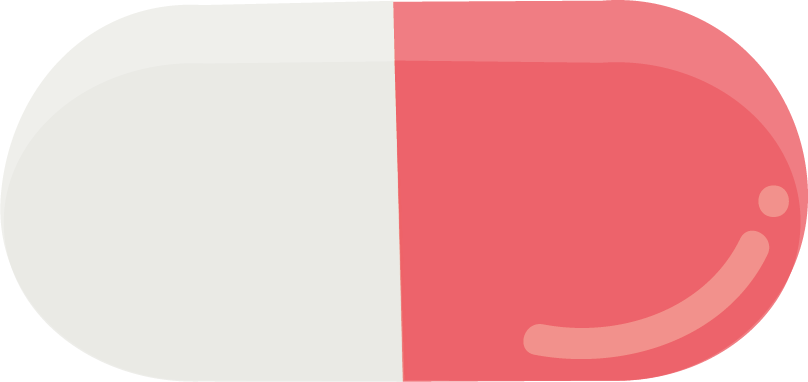
May 2019 | Web Dev
MedHeroes is an application I built with a team in Spring 2019 as part of Brown's course
"Modern Web Applications."
Meet our client, Dr. Nicholas Grumbach!
Dr. Grumbach is a pediatrician who sees patients at the Medicine-Pediatrics Primary Care Center as a member of the Brown faculty. He came to us looking for an application that would encourage compliance among children— that is, he wanted to find a way to encourage children with long-term medical conditions (such as asthma) to take their prescribed medication.
Dr. Grumbach is a pediatrician who sees patients at the Medicine-Pediatrics Primary Care Center as a member of the Brown faculty. He came to us looking for an application that would encourage compliance among children— that is, he wanted to find a way to encourage children with long-term medical conditions (such as asthma) to take their prescribed medication.
Meet the team:
- Me (Brown) — full-stack developer, illustrator
- Catherline Li (Brown) — front-end developer
- Shani Abass (RISD) — illustrator
Initial Resources
Dr. Grumbach had actually worked on this idea beforehand when he participated in a
healthcare hackathon. He came to us with a couple of screens worked out, which I share below:
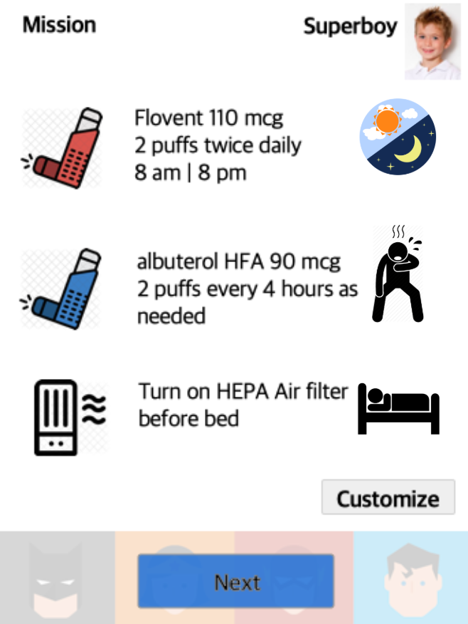
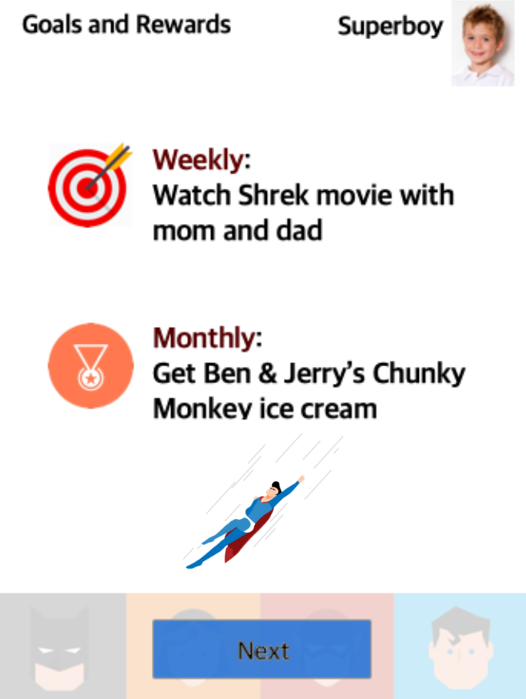
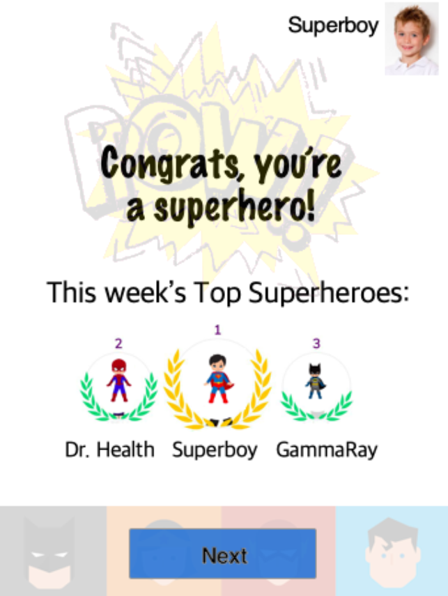
These examples helped our team understand exactly what Dr. Grumbach wanted— a child-friendly theme,
a motivation system, and a way to keep track of progress. We recognized that the UI would need a
serious update to be comparable to modern app designs, but this laid the groundwork for our
future design iterations.
One thing we removed from the demo almost immediately was the third screen which displays a
ranking of the most "compliant" users. After some discussion, none of us believe that the app should
advocate for health as a competition. When we communicated this to Dr. Grumbach, he agreed that
the feature would not be necessary.
Research
Before designing our application, we conducted user research to gain insight
into how this app would be used. We interviewed 2 parents with children and 3
pediatricians living locally in Rhode Island. The interviews occurred over
the phone and were semi-structured, each lasting about 25 minutes.
From our interviews, we gained the following information:
- It was often hard for parents to deal with children who didn't like taking their medication.
- Children are hard to motivate when they don't understand the long-term benefit of their actions.
- Many of Dr. Grumbach's patients come from low-income family and use their phones as their computers.
- Many parents often didn't understand the medical instructions they were given by the doctor.
We then constructed a list of necessary specifications for our application:
- There needs to be a rewards system to motivate the children.
- Every user needs to have their own account so that they can look at their personal medication. This information needs to be handled carefully because medical information is sensitive.
- The app should be optimized for mobile use.
- It should be easy to use for children, parents, & doctors who all interact with the app in some way.
Sketches
After we laid out the plans for the functionality of our app, it was time to start sketching!
These turned out to be rudimentary sketches, but were necessary to get us to start thinking about
our final design.
We defined 5 screens— Calendar, Profile, History, Dashboard, and Rewards. There's also some
concept art I draw in the bottom right corner, but in hindsight, I think it's a little
terrifying. Good thing it didn't make it to the final design!
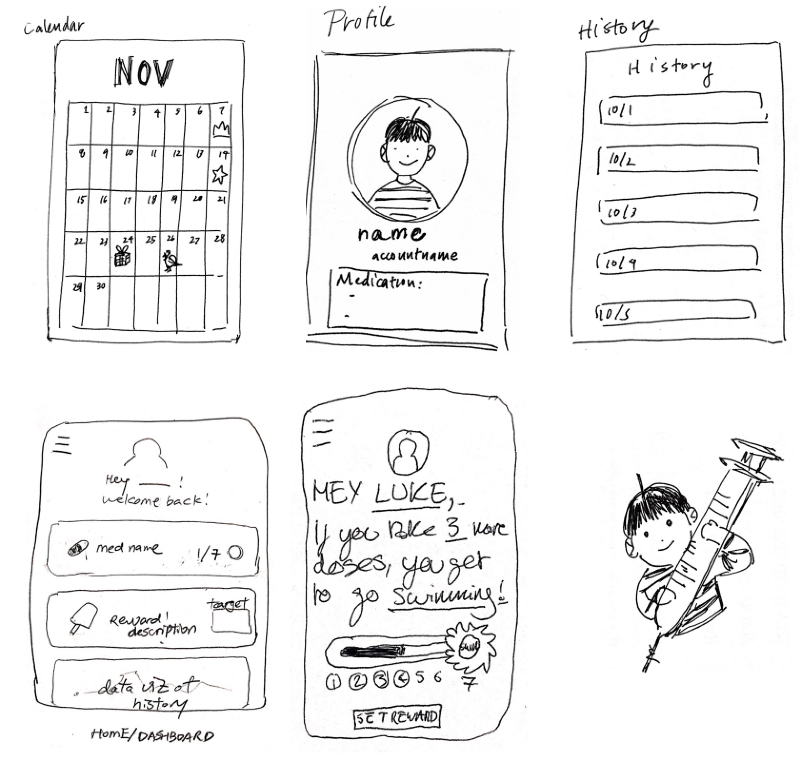
Wireframes
After sketches came wireframes!
These particular wireframes were made by Catherine in Adobe XD, and I used
them as the basis of the initial HTML/CSS demos I coded for the application.
Illustrations
This was the fun part! In an app that targets children, colorful visuals and playful images
are essential. We created a total of 40 images (10 avatars + 30 rewards) for our application.
AVATARS
For a while we wondered how we could represent superheroes as icons. We couldn't use the
famous superheroes like Spiderman because copyright, and when we sketched some superhero
icons we found that it would be difficult to comprehensively represent everyone.
We asked some parents what is popular among their kids, to which a common answer was
"Paw Patrol," a TV show about a police dog. Inspired by the popularity of this
TV show, we decided to go with superhero animals. I was in charge of illustrating the
avatars, which I display below!
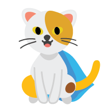
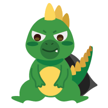
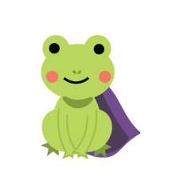
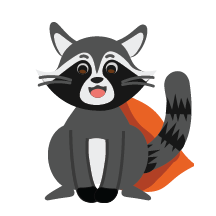
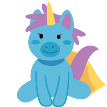
REWARDS
Shani was in charge of creating the reward icons. After Shani vectorized the
initial design, I edited them to increase compatibility with the avatars.
Again, we focused on vibrant, fun images! Here's a sample of a few of the rewards.
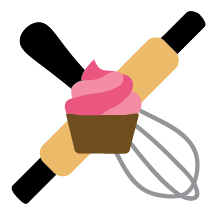
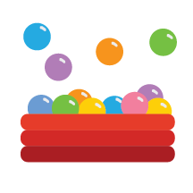
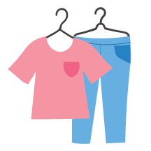

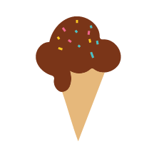
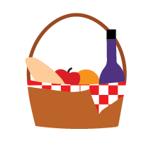
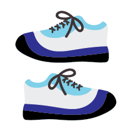
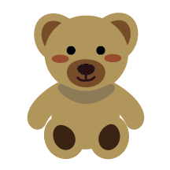
Development
Finally, once we had everything prepared, we could code the final product!
This project was bigger than we all expected it to be, especially because
of the complicated logic in keeping track of the days that users have to
take medication, how many days they have completed, and what medications they
have already fulfilled for the day. The back-end ended up being fairly
complicated, and being the only back-end programmer on the team, it was tough but
I learned a lot.
We were actually in quite a rush to reach the deadline, so the final UI only shaped
up around 5 days before. At the time Catherine was working super hard to beautify the
UI with her wicked CSS skills.
Here are some key screenshots showing the developed product:
Unfortunately, there currently isn't a live demo, but I hope to one day get it
running!
P.S. if you're interested, You can find more information about the
project here! 😏
Conclusion & Future Work
This project probably caused me the most stress I have ever had in my life,
but it was incredibly rewarding. I felt myself grow as a programmer, a designer,
and an illustrator all at the same time— in fact, this was the semester where
I learned Adobe Illustrator one painful night at 2am! (Though it wasn't awesome
at the time, I am extremely grateful I did that.)
Some things to explore in the future are further development (for example, improving
the calendar such that it explicitly says what medicine has been taken on what day)
and more user testing (never enough of that). Overall, a great project, and a concrete
time in my life where I was growing every single day.